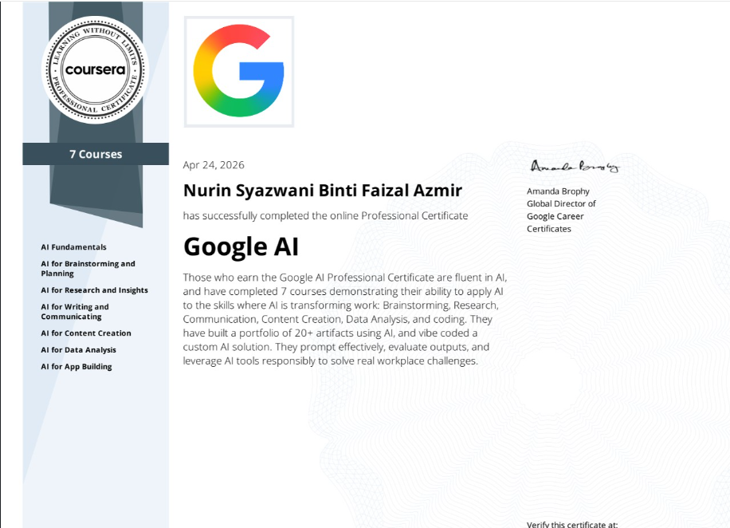
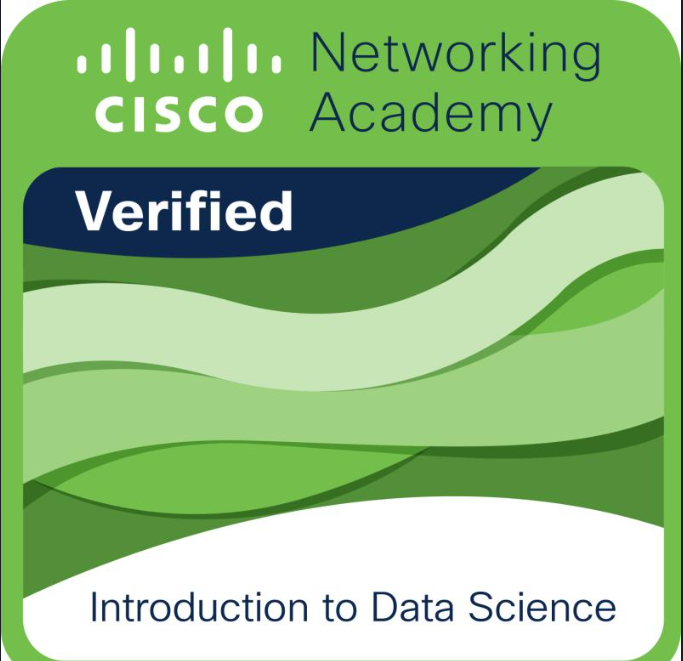
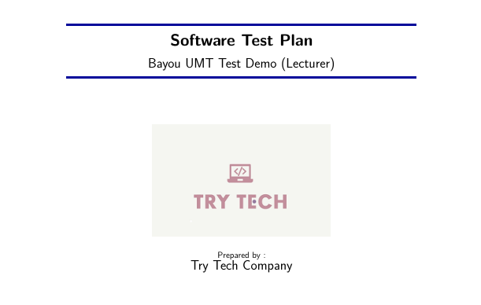
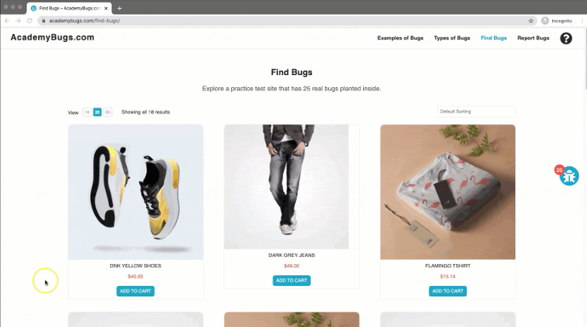
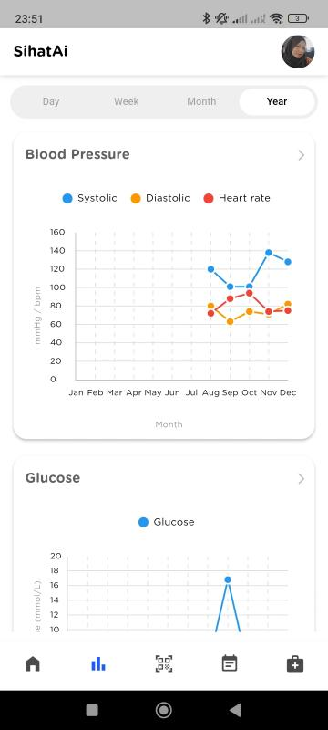
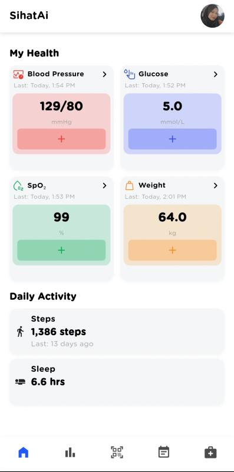
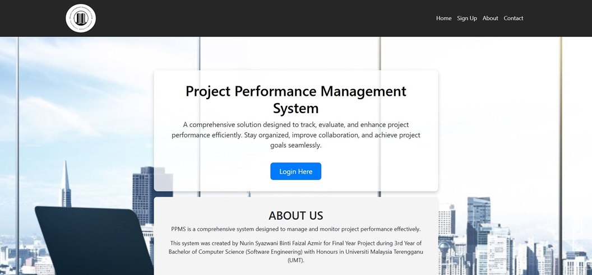
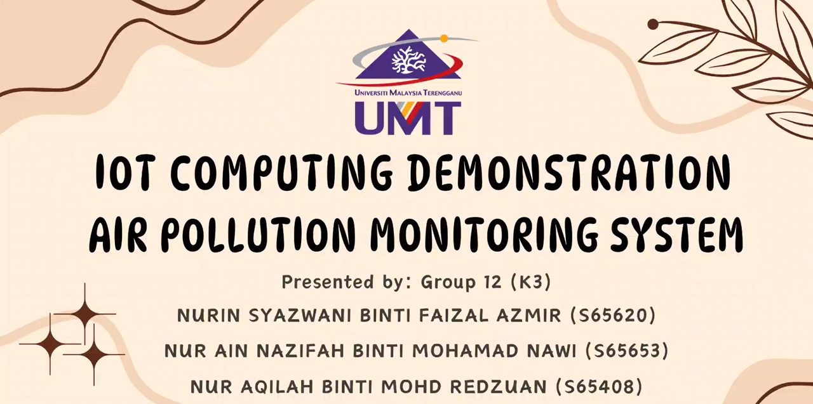

Hi, I'm Nurin Syazwani
Junior QA Engineer / Software Tester
Computer Science (Software Engineering) graduate with an engineering background. Specialized in maximizing software stability via robust manual validation, API contract testing, and Selenium automation frameworks.
About Me
Introduction
I hold a Bachelor of Computer Science (Software Engineering) specializing in test architecture design, UI automation testing (Selenium Java), and robust API verification. Leveraging a full-stack engineering background from my internships, I bring an "under-the-hood" code perspective to QA—allowing me to pinpoint root-cause architectural bugs in Agile environments before they hit production.
Leadership & Extracurriculars
Persatuan Seni Silat Cekak UMT
Directed organizational governance, structured official registries, and managed documentation workflows to ensure alignment with university regulations.
COMTECH Club
Engaged in tech community initiatives, peer programming networks, and collaborative software development workshops within the university ecosystem.
Skills
Technical Expertise
Testing & Quality Assurance
Development & Tools
Qualifications & History
My Journey & Experience
Education
Experience
- Gathered business rules for a KPI Project Performance Management System and mapped system workflows into technical verification metrics.
- Built detailed system layout wireframes via Figma to identify user experience bottlenecks prior to baseline code generation.
- Supported standard sprint lifecycle mapping inside a cross-functional Agile ecosystem.
- Conducted exploratory and ad-hoc functional testing on 15+ backend endpoints to map frontend actions to system stability.
- Analyzed HTTP response statuses and raw JSON payloads to verify data schema integrity and cross-module structural accuracy.
- Investigated system error payloads, tracing structural validation anomalies and isolating architectural backend bugs during the development cycle.
- Supported mobile module engineering using the Flutter framework, validating system inputs and UI rendering behavior against data requirements.
Certifications & Credentials
Verified Specializations

Google AI Professional Certificate
Completed 7 comprehensive courses demonstrating capabilities in Data Analysis, Prompt Optimization, Code Evaluation, and responsible AI system architectures. Built a robust portfolio of 20+ functional engineering artifacts.
Introduction to Software Testing
Mastered base methodologies governing the software verification lifecycle, incorporating test execution strategies, defect isolation tracking, and validation environments.

Introduction to Data Science
Trained in analytical frameworks targeting raw data collection operations, parsing pipelines, structural transformation patterns, and automated statistical sorting configurations.
Services
What I Offer
Designing high-coverage edge-case scenarios (Boundary & Negative tests) for web workflows.
Writing clean Page Object Model automated regressions in Selenium Java and JUnit environments.
Intercepting payloads, checking response codes, and running automated assertions via Postman collections.
Portfolio
Most Recent Work

Automated Testing - Bayou Learning Platform
Developed automation scripts to validate login flows, profile updates, and email input validations.

Defect Audit - AcademyBugs E-Commerce
Detected and documented logical errors in financial transactions across the system with 25 bug reports.



SihatAl Wellness App — ME-Tech Solutions Internship
Engineered a multi-module health application using Laravel (PHP) and Flutter. Designed 15 SQL database tables, built BLoC architecture workflows, and resolved data mapping errors using eager-loading strategies.

Project Performance Management System (PPMS)
Engineered system requirement maps, constructed workflow layouts, and managed structural data verification tests for metric compliance.

IoT Air Pollution Monitoring System
Assisted in the system development process and executed integrity verification checks for environmental sensor data.
Have a project in mind?
I am ready to contribute my skills in test automation, quality control, and stability analysis for your company's software ecosystem.
Contact MeContact Me
Get In Touch